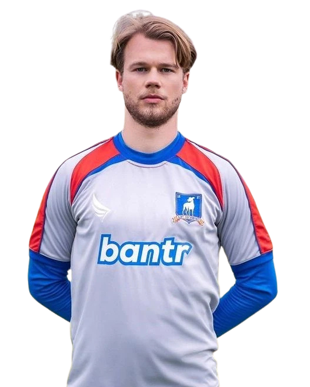

13
← Back to squad
JanMaas
- Position
- Centre Back
- Squad number
- 13
- Nationality
- Dutch
- Birthplace
- Groningen, Netherlands
- Height
- 6'4"
Jan Maas is a Dutch centre-back who joined AFC Richmond during the 2020/21 season. Tall, composed and physically imposing, Maas provides an important presence at the heart of the Richmond defence.
Born in Groningen, the Netherlands, Jan combines defensive strength with a direct and straightforward personality. His honest approach has become one of his most recognisable characteristics both on and off the pitch.
At 6'4", Maas is one of the tallest players in the Richmond squad and offers the team considerable aerial strength and defensive presence.